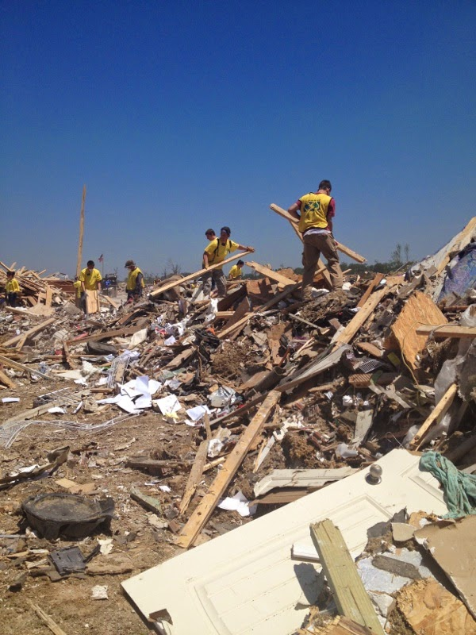

Discover Causes
Animals
Wildlife conservation seeks
to maintain a world where wildlife thrives and is
valued by societies through wildlife refuges and
sanctuaries, as well as wildlife protection and
conservation research. >>
Wildlife Conservation

Zoos and aquariums are
committed to saving species worldwide by uniting
expertise in animal care and conservation science
with a dedication to inspiring passion for nature.
>>
Zoos and Aquariums

Animal Rights, Welfare, and
Serivces charities protect, defend, and provide
needed services to domestic animals through
veterinary services; humane societies;
organizations protecting animals from cruelty,
exploitation and other abuses; and animal training
and specialty services. >>
Rights, Welfare, and Services
View all animal charities >>
Arts, Culture, Humanities
Libraries, Historical
Societies, and Landmark Preservation Charities
preserve and commemorate the events, places, and
cultures that created and continue to shape
different cultures. >>
Libraries, Historical Societies, and Landmarks
Museums aim to inspire
discovery and responsibility for our world.
throught traditional museums, as well as academies
and institutes that provide training to
practitioners and collection maintenance.
>>
Museums

Performing Arts charities
bring the arts to the public through major
theatrical venues, arts festivals, performance
halls and cultural centers, and arts programs that
promote scholastic achievement. >>
Performing Arts

Public Broadcasting and Media
charities promote the distribution of ideas by
operating and supporting both major public and
independend local-access media and communications
services. >>
Public Broadcasting and Media

View all arts, culture, humanities charities >>
Community Development
Housing and Neighborhood
Development charities invest in and improve local
communities by providing utility assistance, small
business support programs, and other revitalization
projects. >>
Housing and Neighborhood Development
The United Way is a global
organization composed of local chapters which
provide funds and support to local orgranizations
who support education, economic growth and
stability, and health advancments. >>
United Ways
Community Foundations promote
giving by managing long-term donor-advised
charitable funds for individual givers, much like a
mutual fund for giving, and by distributing those
funds to community-based charities over time on
behalf of givers. >>
Community Foundations
View all community development charities >>
Education
Early Childhood and Youth
Education Programs provide foundation-level
learning and literacy, classroom support, and
instruction as well as, preparation for
semiskilled, skilled, technical or professional
occupations. >>
Early Childhood and Youth Programs

Adult Education Programs
provide an opportunities for adults to develop
their leadership skills or expand their knowledge
in a particular discipline outside the formal
educational system. >>
Adult Education Programs

Special Education charities
provide placement and individualized instruction,
and support services for gifted or disabled youths
who require modified curricula or teaching
methodologies in order to learn. >>
Special Education

Education Policy and Reform
charities promote and provide research, policy, and
reform of the management of educational
institutions, educational systems, and education
policy. >>
Education Policy and Reform

View all education charities >>
Environment
Environmental Protection and
Conservation charities develop ways to combat
pollution; promote conservation and sustainable
management of land, water, plant and energy
resources; purchase and protect land; and develop
more efficient uses of both energy and waste
materials through direct action and scientific
research. >>
Protection and Conservation

Botanical Gardens, Parks, and
Nature Centers promote preservation and
appreciation of the environment, as well as lead
anti-litter, tree planting and other environmental
beautification campaigns. >>
Gardens, Parks, and Nature Centers

View all environment charities >>
Health
Diseases, Disorders, and
Disciplines charities seek cures for diseases,
provide direct services, advocate for public
understanding, and support targeted medical
research. >>
Diseases, Disorders, and Disciplines
Patient and Family Support
organizations offer wish granting programs, camping
programs, housing or travel assistance and other
services for family members and patients that are
diagnosed with a serious illness. >>
Patient and Family Support

Treatment and Prevention
Services charities are provide direct medical
services to the public, as well as promote public
understanding and awareness of the prevention of
healthe risks, diseases, disabilities.
>>
Treatment and Prevention Services
Medical Research
organizations are scientific or academic based
groups that research causes and cures of disease
and develope new treatments. >>
Medical Research
View all health charities >>
Human Civil Rights
Voter Education and Reform
ogranizations seek to improve voter experience,
knowldege, and participation as well as the
electoral process. >>
Voter Education and Reform
Advocacy charities defend
civil rights as well as engage in and advance
social action which supports the passage and
enforcement of laws and other social measures
designed to protect and promote reform. These
organizations include government watchdogs,
organizations protecting civil and legal rights,
and those promoting tolerance and understanding
among racial, ethnic and cultural groups.
>>
Advocacy

View all human civil rights charities >>
Human Services
Children's and Family
Services strengthen families and promote child
welfare through foster care, adoption services,
youth shelter and recreation programs, family
counseling, and parenting education.
>>
Children's and Family Services

Food Banks, Pantries, and
Distribution Organizations provide hunger relief in
communities throughout our world. >>
Food Banks, Pantries, and Distribution
Homeless Services provide
assistance to homeless individuals and families
through direct social services as well as advocacy.
>>
Homelessness Services

Social Service charities
advocate for the underemployed, the elderly and
disabled, and other disadvantaged populations
through community centers and multipurpose
organizations that promote volunteerism.
>>
Social Services

View all human services charities >>
International
International Peace,
Security, and Affairs charities promote sponsor
exchange programs; human rights groups; foreign
policy research and advocacy; and United
Nations-related support. >>
International Peace, Security, and Affairs
Humanitarian Relief Supplies
organizations specialize in collecting donated
medical, food, agriculture, and other supplies and
distributing them overseas to those in need.
>>
Humanitarian Relief Supplies

Development and Relief
Service charities provide medical care and other
human services as well as economic, educational,
and agricultural development services to people
around the world. >>
Development and Relief Services

View all international charities
Research and Public Policy
Non-Medical Science and
Technology Research charities include those
institutions providing research and services in a
variety of scientific disciplines. These charities
advance the knowledge and understanding of areas
such as energy efficiency, environmental and trade
policies, and agricultural sustainability.
>>
Non-Medical Science and Technology Research
Social and Public Policy
Research charities include those that advance both
economic and social issues impacting our country
today. These charities educate the public and
influence policy regarding healthcare, employment
rights, taxation, and other civic ventures.
>>
Social and Public Policy Research
View all research and public policy charities
>>